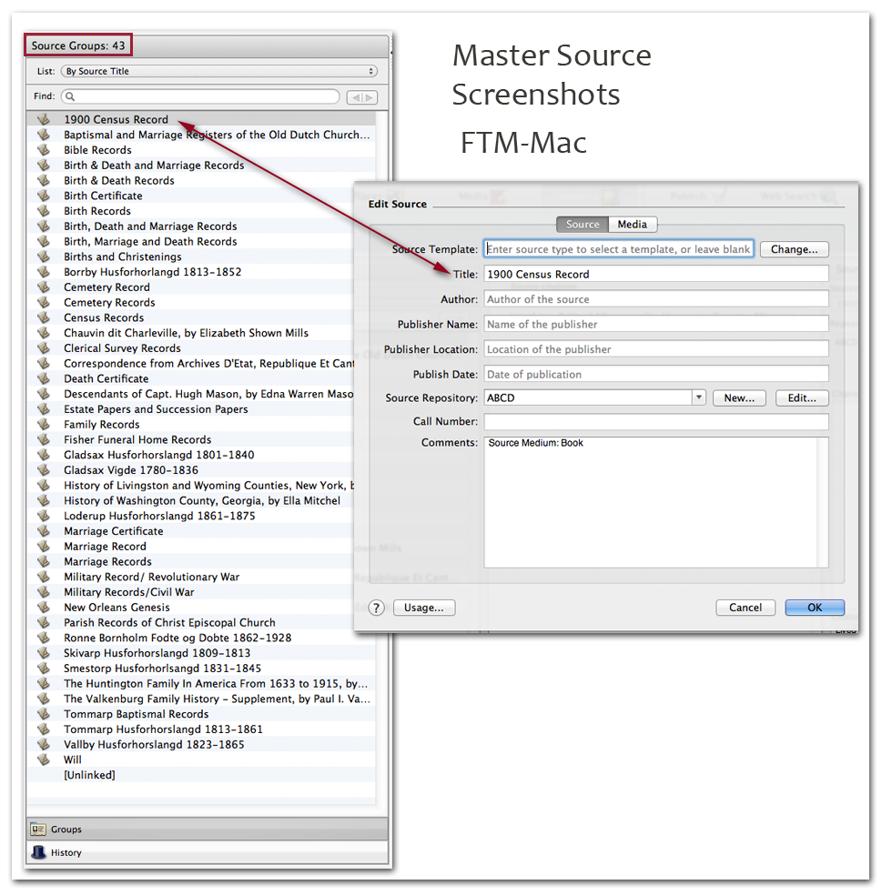

HOME >
EE & GPS Support >
About Citations > Master Source
PAF5.2 AncestralQuest12.1 FTM TMG7 Legacy7 RootsMagic4 Reunion FamilyHistorian
PAF 5.2
Screen shots?
Ancestral Quest 12.1
Screen shots?
FTM
FTM-Mac

TMG, v7
TMG's "Master Source" has a one to many relationship with citation specific entries. TMG's Repositories have a one to many relationship with the collective group of "Master Sources."
Legacy 7
RootsMagic 4
Note: To develop examples, I loaded a Legacy sample file into RootsMagic, so the sources ported in as "free form." To the graphic above, I added a RootsMagic template for a US Census so that we'd have a better image of the program's "master source" set up.
Noteworthy: RootsMagic is "splitting" fields. In the above "Edit Source" window, see the presence of the pipes [ || ] in the fields, "Jurisdiction," "Schedule," and "Civil Division." The split allows for abbreviated entries to be entered into the single field (with those abbreviations then applied to the short or subsequent footnote).
Reunion
FamilyHistorian 4
Screen shot of "Source record" window in FH v4. (Note I have customised the labels and reordered the fields, so anyone else with a copy of FH will find "their mileage will vary".)
TMG v7
The upper window says it is a "Master Source List", i.e. (so I've been thinking) a list of Master Sources. When one of these Master Sources in the Master Source List is edited, the window says "Source Definition". Not "Master Source Definition". No wonder I'm confused.
Legacy 7
The upper window says it is a "Master Source List", i.e. a list of Master Sources. When one of these Master Sources in the Master Source List is edited, the window says "Edit Master Source Definition". Now that's consistent!
Roots Magic 4
The upper window says it is a "Master Source List", i.e. a list of Master Sources. When one of these Master Sources in the Master Source List is edited, the window says "Edit Source", not "Edit Master Source". However, the stuff in yellow is marked "Master Source".
The 3rd window is also marked "Edit Source", has stuff in yellow marked "Master Source" but also stuff in green marked Source Details. Looking at that image, and at the RM4 section in the Interoperable Citation Exchange, the window with the green stuff appears to have come from the justification of an assertion and to therefore be what GEDCOM calls a SOURCE_CITATION. So here we have a window referring to Master Source and Source data, with the Source data being what many of us, thanks perhaps to GEDCOM and PAF, call a citation.
Reunion
You refer to a set of Master Source screenshots but the term Master Source appears nowhere. It only says Source.
I now realise I'm just repeating the analysis from Interoperable Citation Exchange but with some knowledge now of what it APPEARS to mean.
It is perhaps important to note the dangers of having confusion over the terms Source, Master Source and Citation. It is also important to note that, so far as I know, all of us who have had any exposure to data modelling refer to the entity Source and have never referred to an entity Master Source.
http://bettergedcom.wikispaces.com/Supplemental+Glossary+from+_Evidence+Explained_%2C+2007 has the EE definition of Source and it equates to what the data modellers have been calling a Source.
The same page also refers to "Master Source List: a term used by some relational databases to refer to a 'pick list' or 'master list' of sources". Note that ESM's definition is for Master Source List not Master Source. 'Master' applies to the list, not the sources.
Essentially, I think this confusion has arisen because we talk about the source(s) of an individual assertion. And about Source Records. And we get resulting confusion when we say that one Source Record potentially contains many sources of different assertions.
Raymond set out to try to clarify the terminology ... but then, at least in my opinion, went to far by saying the "master source" should be defined at the level of the "bibliographic" entry.
All the "elements" are used to (1) form citations (footnotes/endnotes, both long and short, and bibliographic) and to form them, certain other information is needed--category of source (vital record, census record) and template applied, (2) create administrative records (how I want the name to appear in my source list; what file notes do I want to record about the source, the assertion, the repository ...) or (c) link to media.
The elements are arranged in two levels--source level ("Master Source") and citation-specific/assertion level (the man with no name). Some elements naturally belong at the "Master Source" level and, depending on the user, others will fall at the citation-specific level.
If we want to add inline notes to the mix (I'm guessing at the master source level), we'll need elements that describe that makeup.
You wrote, "I think this confusion has arisen because we talk about the source(s) of an individual assertion. And about Source Records. And we get resulting confusion when we say that one Source Record potentially contains many sources of different assertions."
Humm... I think most of us get the one to many relationship, but it seems a bad idea to try to standardize which detail should be required at which level.
I'll try to create the same source in several programs .. Also have two other sets of graphics to finish.
Agreed - we should accommodate users making an arbitrary decision what level the source _record_ sits at, and therefore, what data sits below that.
Perhaps what we should do is try to NEVER use the word "source" on its own.
On that basis, we have:
- the "source of an assertion" (where an assertion refers to values describing an event, attribute, relationship, etc)
- a "source document" (or should we call it a "source object", to cover if it's a gravestone or other physical object?)
"Source documents/objects" are represented by "source records" in GEDCOM etc. They are defined by the definition from EE! of source "an artefact, book, document, film, person, recording, website, etc., from which information is obtained."
I should be free to refer to set my source record at whatever level I want. If I have a microfilm of church records, I should be free to define the source-record as representing the microfilm, or the image of a single parish register on that microfilm (there could be several) or as the image of a single entry in one of those PRs. Or other variations. I might even have a "virtual source object" of "The Parish Registers of St. Werburgh, Chester". (I wouldn't, myself, because I'm a splitter but others might).
The "source of an assertion" then consists of 3 aspects
- identification of which "source document / object" contains the evidence used to justify the assertion;
- identification of where within the "source document / object", we will find the the evidence used to justify the assertion. This could include a quote of the relevant text (or is that in the next part?);
- assessment of the quality of the evidence (etc, etc, ... you can fill in the remainder of this for yourselves but it's the rest of the justification for what a citation contains - "To communicate the strength of our sources").
Items 1, 2 and 3 are then used to create the printed citation / reference note justifying the assertion.
One problem is that we don't have a consistent name for what items 2 and 3 are. And item 2 is hard to define because it's basically "whatever isn't in item 1!"
http://michaelhait.wordpress.com/2011/07/30/5-things-about-records/